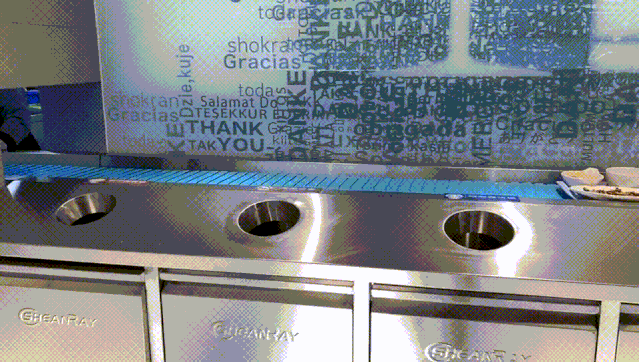
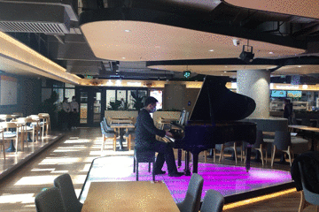

食堂特色
宽敞明亮的食堂环境，温馨舒适的装潢风格，还有满满的高科技加持； 只需手机扫码下单，憨态可掬的送货机器人，便会把饮料运送到同学手中。

送货机器人
食堂的每一层楼都设有垃圾分类处，分为碗筷投放、可回收垃圾等投掷口； 除了垃圾回收，自动化的流水线使同学们不必再在回收点等待，放下餐盘即走。

垃圾分类流水线
可供来客即兴弹奏的钢琴，文艺范儿十足，展现你的高超才艺本领； 指尖跃动的音符，为美食添上艺术气息，让下午茶多了一分舒适惬意。
